.svg)
Essential Oils
Citrus
$14.00 - 15ml
grown in Italy.
Top Uses: Inspires positive mood and calms the mind.
Helps settle an upset stomach.
Helps relax muscles and relieve tension.
Aroma: Sweet, citrus, warm
Latin Name: Citrus bergamia
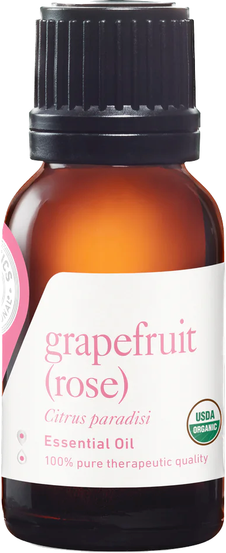
$31.00 - 15ml
orchards in the Italian countryside.
Top Uses: Helps support a positive and joyful mood.
Purifying and cleansing.
Comforts muscles and joints.
Aroma: Sweet, citrus, bright
Latin Name: Citrus paradisi
$14.00 - 15ml
fruits grown on the mountainsides of Italy.
Top Uses: Uplifting and energizing.
Purifying and cleansing.
Helps relieve sore muscles.
Aroma: Fresh, sweet, fruity
Latin Name: Citrus limon
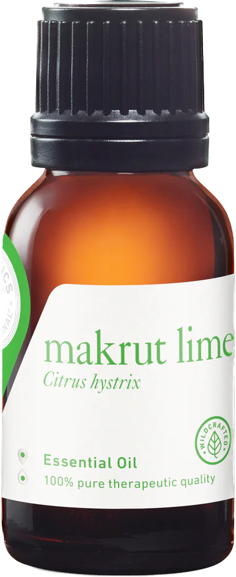
$28.00 - 15ml
the tropical forests of Thailand.
Top Uses: Purifying and cleansing.
Energizing.
Helps create a comforting atmosphere.
Aroma: Sweet, fresh, citrus
Latin Name: Citrus hystrix
$18.00 - 15ml
mandarin fruits grown in Italy.
Top Uses: Purifying and cleansing.
Uplifting and energizing.
Aids in digestion.
Aroma: Sweet, fresh, fruity
Latin Name: Citrus reticulata
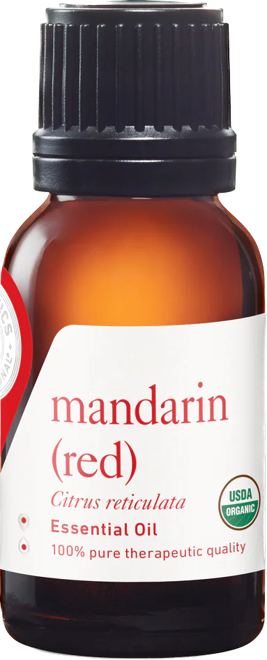
$26.00 - 15ml
fruits grown in Italy.
Top Uses: Comforting for the mind, body, and heart.
Helps settle an upset stomach.
Purifying and cleansing.
Aroma: Sweet, bright, citrus
Latin Name: Citrus reticulata
$12.00 - 15ml
grown in Italian orchards.
Top Uses: Purifying and cleansing.
Uplifting and energizing.
Aids in digestion.
Aroma: Sparkly, sweet, citrus
Latin Name: Citrus sinensis
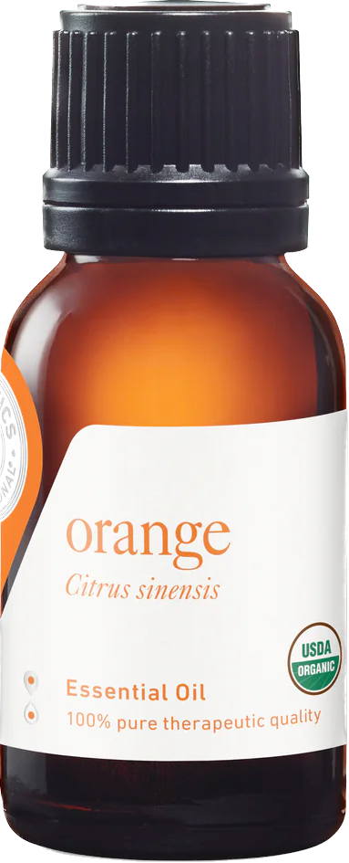
$12.00 - 15ml
fruits in the orchards of Spain.
Top Uses: Purifying and cleansing.
Uplifting and energizing.
Aids in digestion.
Aroma: Sweet, fresh, citrus
Latin Name: Citrus sinensis
Floral
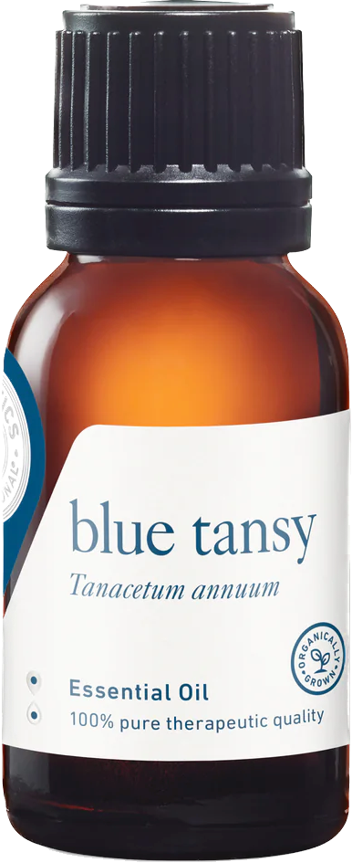
$36.00 - 5ml
$19.00 - 15ml
Top Uses: Comforting and nourishing for sensitive or mature skin.
Helps support skin rejuvenation and repair.
Aroma: Warm, rich, earthy
Latin Name: Daucus carota ssp. carota
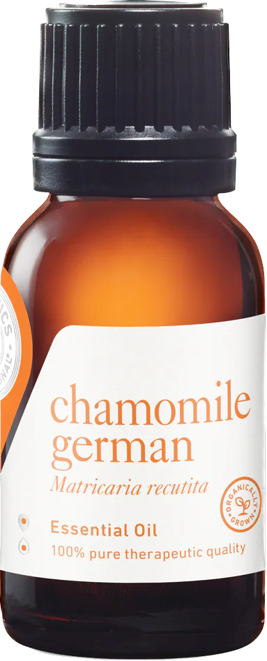
$32.00 - 5ml
cultivated in Nepal.
Top Uses: Calming and rejuvenating for the skin.
Inspires peace and calms negative emotions.
Aroma: Sweet, strong, herbaceous
Latin Name: Matricaria recutita
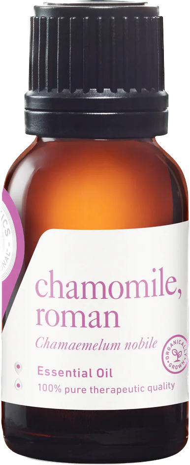
$32.00 - 5ml
Top Uses: Encourages relaxation and supports restful sleep.
Calming for the mind.
Soothing for sore muscles.
Aroma: Sweet, fruity, warm
Latin Name: Chamaemelum nobile
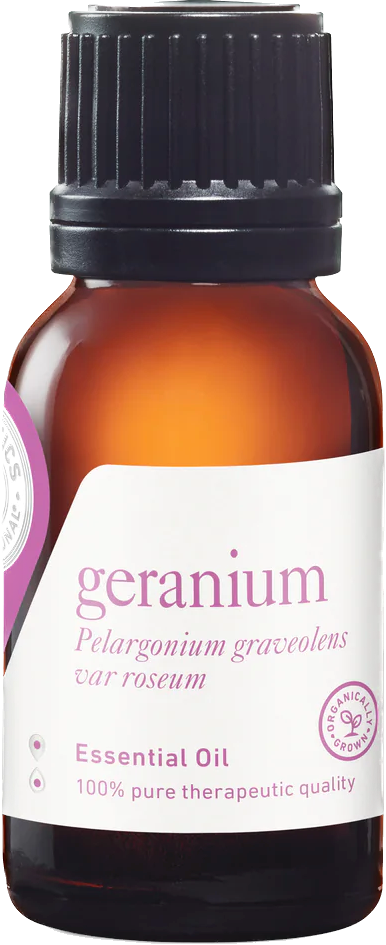
$31.00 - 15ml
in the fields of Madagascar.
Top Uses: Helps move stagnant energy in the physical body as well as the emotions.
Helps calm red and irritated skin.
Regenerative for the skin.
Aroma: Sweet, fresh, herbaceous
Latin Name: Pelargonium graveolens var roseum
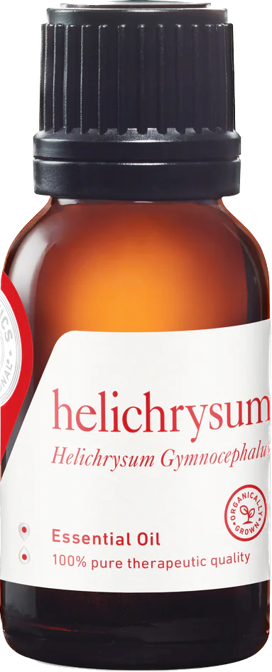
$22.00 - 15ml
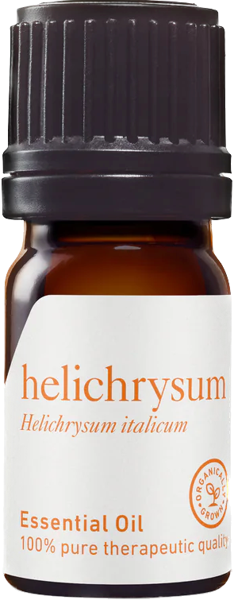
$63.00 - 5ml
plants grown in the fields and mountains of Croatia.
Top Uses: Aids in the recovery of muscles and joints.
Rejuvenating for the skin.
Helps inspire a positive mood.
Aroma: Sweet, fruity, warm
Latin Name: Helichrysum italicum
$17.00 - 15ml $28.00 - 30ml
Top Uses: Encourages relaxation and restful sleep.
Nourishing and calming for the skin.
Restorative for the body, mind, and heart.
Aroma: Soft, floral
Latin Name: Lavandula angustifolia
$22.00 - 15ml
foothills of Mt. Parnassus in Greece.
Top Uses: Encourages relaxation and restful sleep.
Nourishing and calming for the skin.
Restorative for the body, mind, and heart.
Aroma: Soft, floral
Latin Name: Lavandula angustifolia
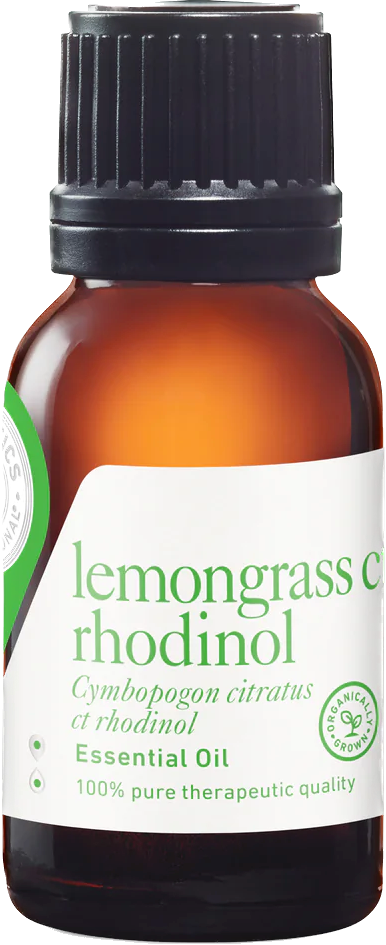
$19.00 - 15ml
grown in the Indian countryside.
Top Uses: Purifying and cleansing.
Nourishing for the skin.
Calming.
Aroma: Citrus, floral, herbaceous
Latin Name: Cymbopogon citratus ct. rhodinol
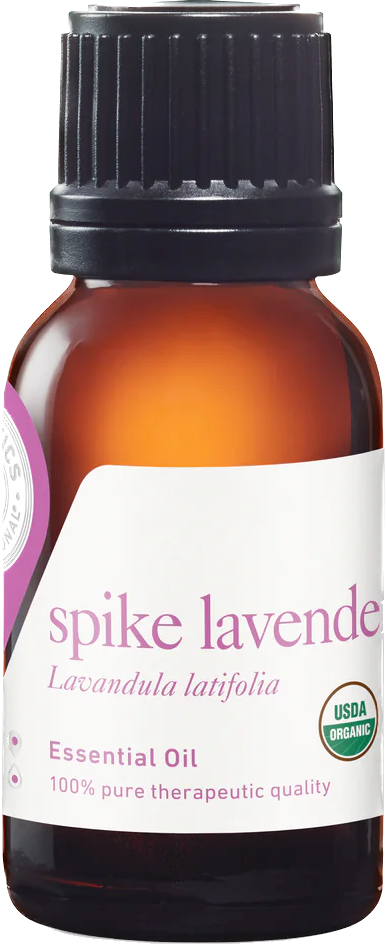
$19.00 - 15ml
Top Uses: Calms the mind and supports focus.
Purifying and calming for the skin.
Aids in post workout muscle recovery.
Aroma: Floral, herbaceous
Latin Name: Lavandula latifolia
Mint Family
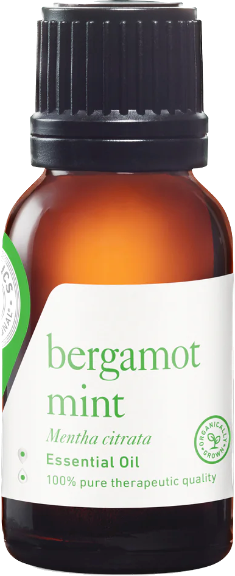
$16.00 - 15ml
Top Uses: Encourages relaxation and positive mood
Gently opens the breath.
Helps relieve sore and tight muscles.
Aroma: Citrus, minty, fresh
Latin Name: Mentha citrata
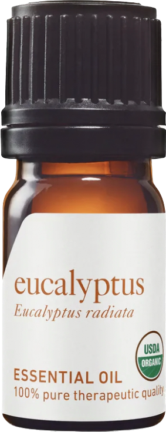
$14.00 - 15ml
Top Uses: Opens the breathe and supports the respiratory
system.
Energizing.
Purifying and cleansing.
Aroma: Camphoraceous, woodsy, crisp
Latin Name: Eucalyptus radiata
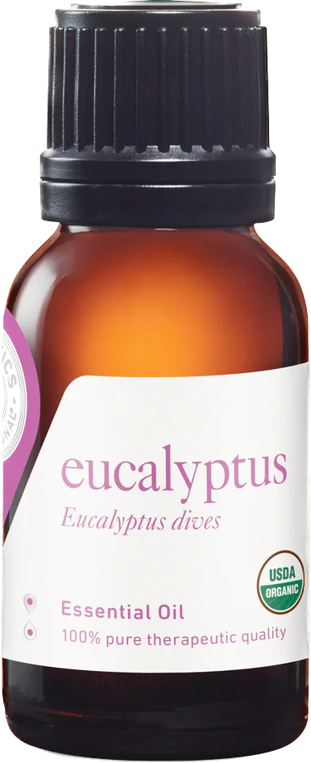
$19.00 - 15ml
Top Uses: Opens the breathe and supports the throat.
Helps relieve sore muscles.
Reduces germs.
Aroma: Minty, fresh, invigorating
Latin Name: Eucalyptus dives
$13.00 - 15ml
Top Uses: Opens the breath and supports the respiratory
system.
Helps relieve tension in the muscles and head.
Calms a queasy stomach.
Aroma: Fresh, minty, powerful
Latin Name: Mentha x piperita
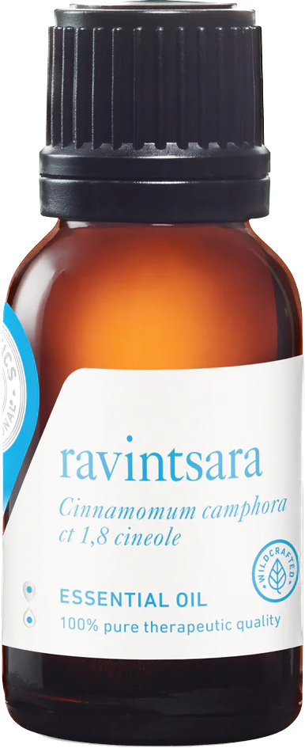
$15.00 - 15ml
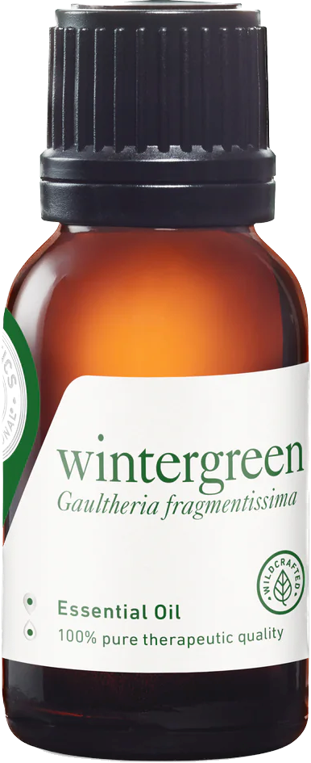
$15.00 - 15ml
Resin
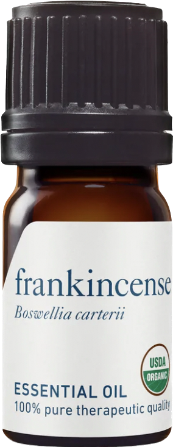
$39.00 - 15ml $65.00 - 30ml
Top Uses: Calming for the mind.
Opens the breath and supports the respiratory
system.
Helps relieve sore joints and muscles.
Aroma: Warm, woodsy, resinous
Latin Name: Boswellia carterii
$26.00 - 5ml
Somaliland.
Top Uses: Quiets the mind and encourages inner peace.
Calming and regenerative for the skin.
Helps reduce germs.
Aroma: Soft, warm, spicy
Latin Name: Commiphora myrrha
Spices
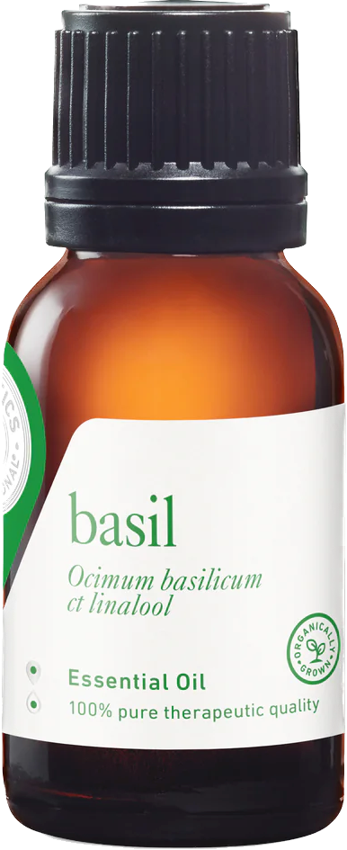
$22.00 - 15ml
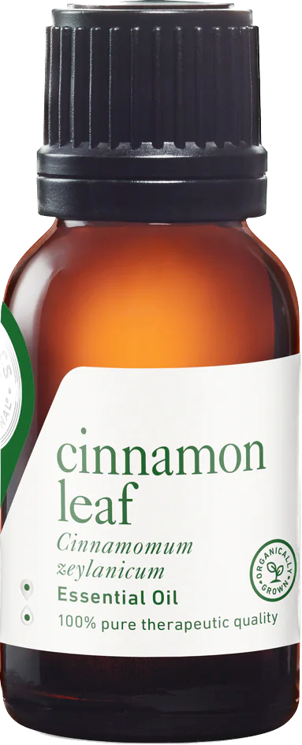
$13.00 - 15ml
trees grown in the forests of Madagascar.
Top Uses: Helps reduce germs in the air and on surfaces.
Supports the immune system.
Aroma: Sweet, spicy, warm
Latin Name: Cinnamomum zeylanicum
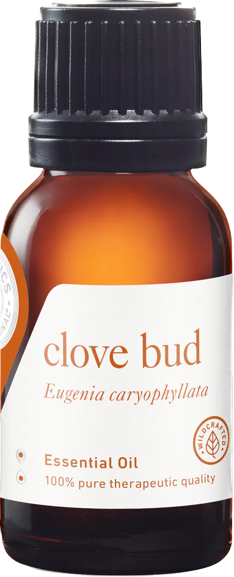
$19.00 - 15ml
Top Uses: Purifying for the air when diffused.
Helps relieve sore muscles and joints.
Aroma: Spicy, woodsy, warm
Latin Name: Eugenia caryophyllata
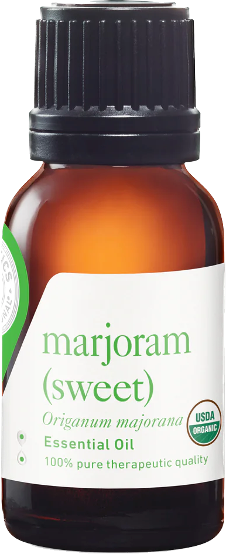
$21.00 - 15ml
Forest
$13.00 - 15ml
in the forests of the USA.
Top Uses: Inspires peace and relaxation.
Helps reduce puffiness.
Discourages bug bites and calms itchy skin.
Aroma: Woodsy, earthy, light
Latin Name: Juniperus virginiana
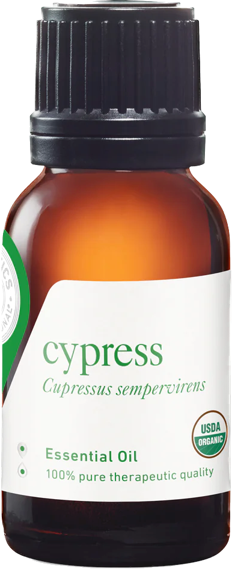
$15.00 - 15ml
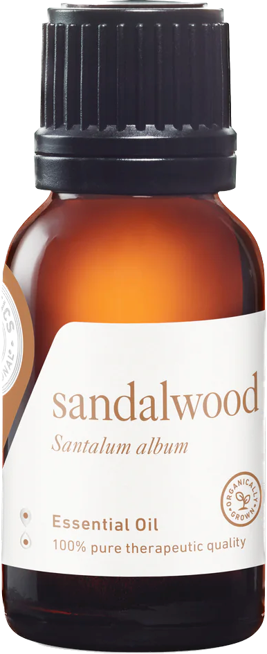
$55.00 - 5ml
Top Uses: Brings serenity and helps support energy
flow in the body.
Purifying
Soothing for the skin.
Aroma: Woodsy, sweet, exotic
Latin Name: Santalum album
$14.00 - 15ml
Australia.
Top Uses: Discourages bug bites
Purifying and cleansing
Supports the immune system
Aroma: Herbaceous, medicinal, sharp
Latin Name: Melaleuca alternifolia
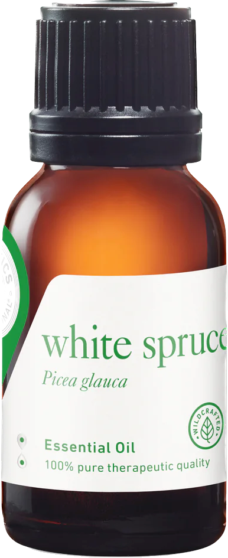
$33.00 - 15ml
Blends
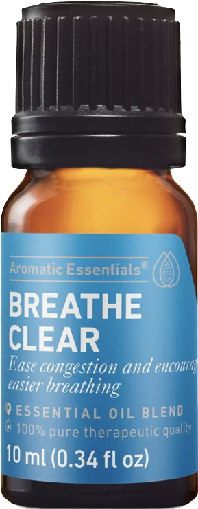
$19.00 - 10ml
Components: Ravintsara, Eucalyptus Globulus, Tea Tree
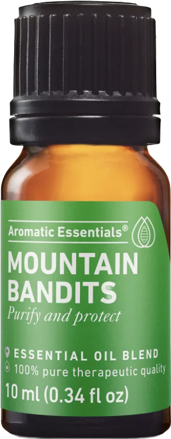
$20.00 - 10ml
Components: Clove Bud, Lemon, Cinnamon Bark,
Eucalyptus Radiata, Rosemary ct Camphor
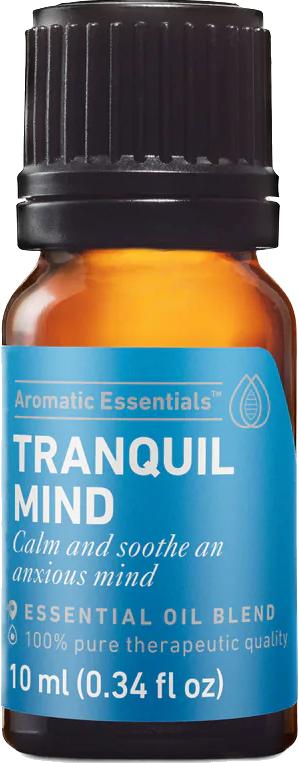
$23.00 - 10ml
Components: Wild Orange, Lavender, Roman Chamomile
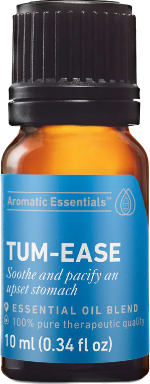
$20.00 - 10ml
Components: Sweet Orange, Ginger, Peppermint